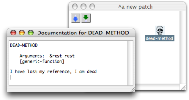

OpenMusic DocumentationHiérarchie de section : OM 6.6 User Manual > Visual Programming I > Dead Boxes
OpenMusic DocumentationHiérarchie de section : OM 6.6 User Manual > Visual Programming I > Dead Boxes
Navigation : page précédente | page suivante
Attention, votre navigateur ne supporte pas le javascript ou celui-ci à été désactivé. Certaines fonctionnalités de ce guide sont restreintes.
Missing References : Dead Boxes
An item used in a patch may sometimes be missing. Dead boxes  refer to saved items that OM cannot find anymore :
refer to saved items that OM cannot find anymore :
- if an item belongs to a library that was loaded at a previous session, and that this library isn't reloaded,
- if an OM function doesn't exist in a new OM version,
- If a sub patch that was used in another patch is missing in a workspace.
Dead boxes have been designed to keep as much information as possible about their original reference, so that they can possibly be loaded again correctly.
Dead Boxes
If the user tries to open a dead box or to get information or documentation, the box doc will say "I have lost my reference, I am dead"...

... or a message of the same kind.

Note
When a dead box "knows" which reference – class or function for instance – it was attached to, it can possibly be restored. Its reference must be loaded again or re-created before the patch is reloaded. To reload a patch containing dead boxes, use the "Last Saved" command.
Saving Procedures
Finding Lost Patches
If a patch reference is missing in the workspace, OM will point it out and offer to find it. If the item can't be found, the user will be offered to look for it by himself.

Looking for the reference of a dead box.Zoom
{kind=link}
What Is a Patch Reference ?
See also : Workspace / Adding Components in a Workspace at a Session : Import and Export Functions
Références :
Plan :
Navigation : page précédente | page suivante
A propos...(c) Ircam - Centre Pompidou